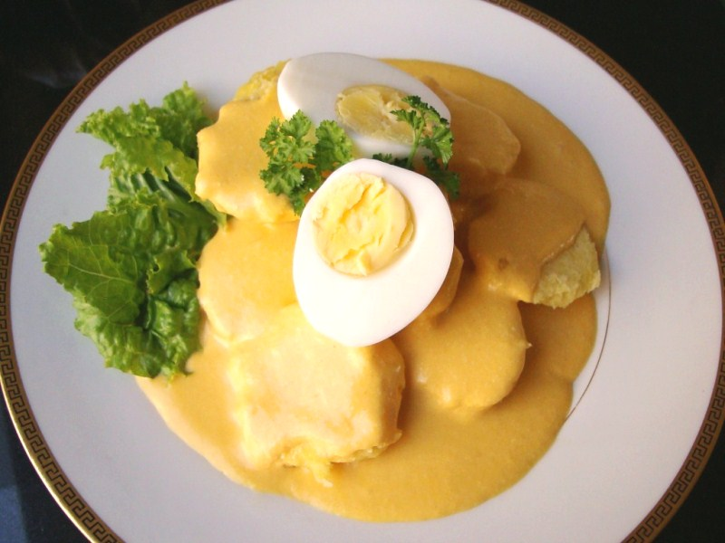

Papa a la Huancaina
Octubre 7, 2017.

Es un plato típico e histórico de la cocina criolla peruana, compuesta por papa sancochada, bañada con salsa de ají molido, leche, aceite y queso fresco. En su presentación clásica es acompañada por huevos duros, aceitunas negras y hojas de lechuga.
Ingredientes:(Para 8 personas)
- 1 kg de papa Para la salsa:
- 400 gr de queso fresco
- 1 tarro de leche evaporada
- 1 paquete chico de galletas de soda
- 2 ajíes amarillos
- 2 dientes de ajo
- ¼ de cebolla
- Aceite c/n. Decoración y complemento:
- 04 huevos sancochados (partidos por la mitad)
- 08 aceitunas
- Hojas de lechuga (muy bien lavadas)
PREPARACIÓN
Sancochar las papas, pelarlas y cuando enfríen partirlas en tajadas.
Freír un poco el ají previamente despepitado, los dientes de ajo y la cebolla, dejar enfriar.
Para preparar la salsa, vierta en la licuadora el ají, ajos y cebolla, un poco del queso fresco trozado, galletas y leche, comenzar a licuar manteniendo una mezcla espesa, agregando poco a poco y hasta terminar el resto de los ingredientes.
Servir: colocando la hoja de lechuga, las tajadas de papa, la salsa y decorar con el huevo y aceituna.
CONSEJOS:
- Para que la papa no manche la olla en la cual se sancochan, hervirlas con media tajada de limón.
- Para que la papa tenga mejor sabor, agregar sal al momento de hervirlas.
- Para obtener huevos sancochados con la yema amarilla y evitar que esta adquiera un color negruzco, cocínelos de la siguiente manera:
- Poner a hervir agua, cuando esta hierva, agregar los huevos, desde el momento, que estos comienzan a hervir cuente 10 minutos, sáquelos del fuego, vierta el agua caliente y écheles agua fría inmediatamente, apenas enfríen pélelos.